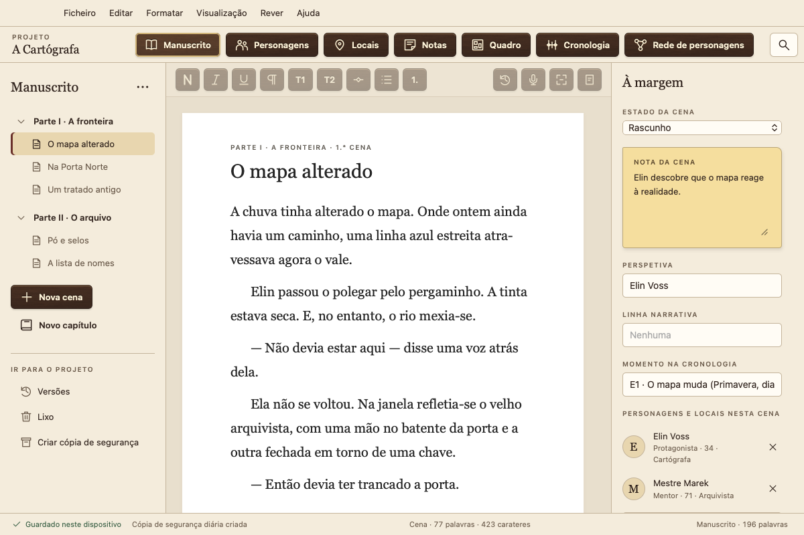
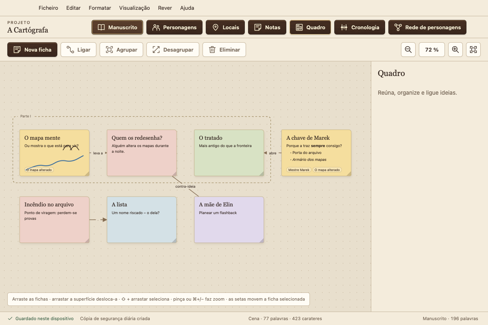
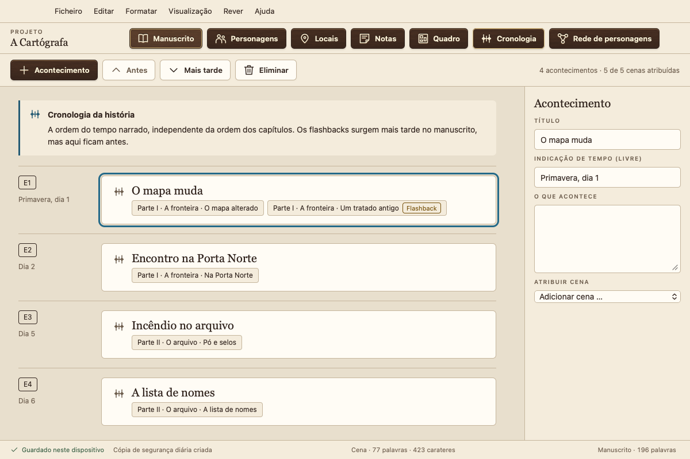
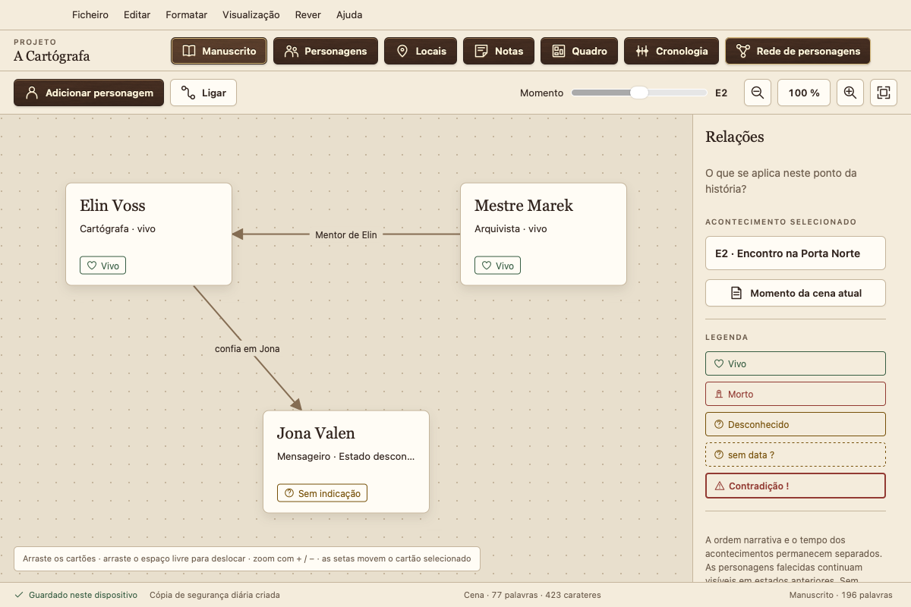
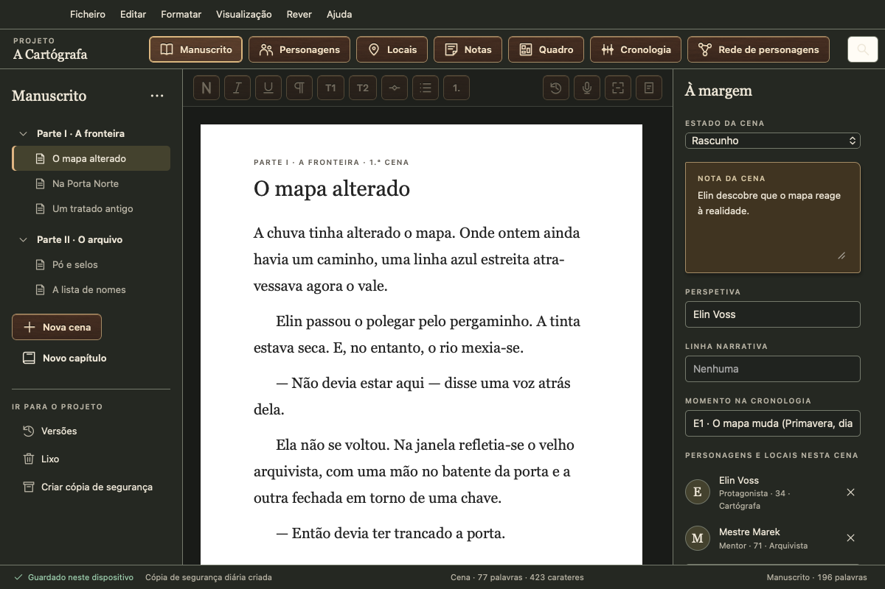

A aplicação de escrita gratuita para romancistas
O seu manuscrito fica nas suas mãos: sem subscrição, sem conta, sem recolha de dados, sem treino de IA. Para Mac, Windows, Linux e Android.
Versão 0.1.5 · fase inicial de testes · 6 idiomas · downloads

Tudo o que o seu livro precisa, num só lugar
Capítulos e cenas
Escreva por cenas, arraste-as para uma nova ordem e mantenha a visão de conjunto com o estado, a perspetiva e a nota de cada cena.
Personagens e locais
Perfis de personagens com campos à sua medida. O Atramentum deteta quem aparece em cada cena.
Quadro
Fichas com texto, listas e esboços, em grupos e com ligações, associadas a cenas e personagens.
Cronologia
Acontecimentos no tempo da história. O Atramentum identifica os flashbacks quando a ordem do livro não coincide com a cronologia.
Rede de personagens
Relações e estados das suas personagens em qualquer ponto da história. Quem ainda está vivo no capítulo 12?
Página normalizada, Word e e-book
Exporte para PDF como página normalizada ou exemplar de leitura, para Word, e-book (EPUB, também para Kindle via KDP), Markdown ou texto simples, se quiser com página de rosto, dedicatória, ficha técnica e formato de página próprio. Importe de Word, Scrivener, Markdown e texto simples.
Revisão
Análise de estilo com legibilidade, frases longas, repetições e palavras de enchimento. Verificação de ortografia e gramática de todo o manuscrito com o corretor do seu sistema. Compare versões e ouça o texto em voz alta.
Visão geral
Estrutura em tabela ou fichas de cenas, etiquetas de cor e palavras-chave. Abra outra cena ou uma ficha de personagem ao lado do texto.
Veja como funciona




As suas palavras são suas
Local e offline
O Atramentum guarda tudo no seu dispositivo e funciona sem internet. Nunca envia os seus textos nem os seus dados pessoais a ninguém.
Nada se perde
Cada alteração é guardada de imediato. Tem ainda versões de cada cena, o Lixo, cópias de segurança diárias e uma ferramenta de recuperação.
Em todos os seus dispositivos
Sincronização através de uma pasta no seu próprio serviço de nuvem (iCloud Drive, Dropbox, OneDrive …), sem qualquer conta do nosso lado.
Download
| Sistema | Download | Guia |
|---|---|---|
| Mac macOS 13+, Apple silicon e Intel | .dmg | Instalar no Mac |
| Windows 10 e 11, 64 bits | Instalador (.exe) | Instalar no Windows |
| Linux Ubuntu, Debian, Mint | .deb | Instalar no Linux |
| Linux todas as outras distribuições | AppImage | Instalar no Linux |
| Android 7 ou posterior, smartphone e tablet | .apk | Instalar no Android |
O Atramentum não está notarizado pela Apple nem assinado com um certificado da Microsoft. Os certificados custam dinheiro todos os anos, e o Atramentum é gratuito. Por isso, o macOS e o Windows pedem uma confirmação antes de o abrir pela primeira vez; os guias mostram como abri-lo mesmo assim. A versão para iPhone e iPad chegará através da App Store.
Fase inicial de testes: faça cópias de segurança regularmente e conte-me o que notar. As somas de verificação e as ferramentas de recuperação estão na página da versão.